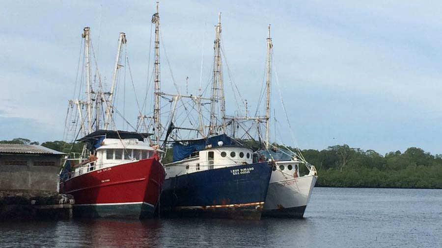
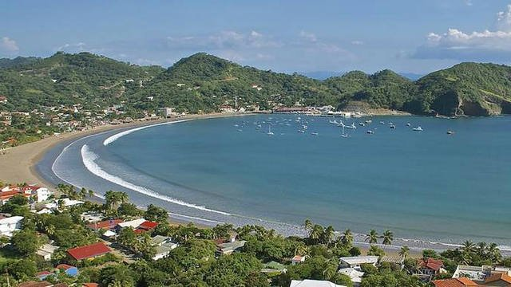

Plan naturaleza
Si te gusta sentir un contacto intimo con la naturaleza, este plan es para ti. El plan incluye la visita a playas ,montañas y caminatas en los lugares mas paradisiacos del pais.

Plan catedral
Si lo tuyo es el turismo historico, este plan te ofrece un recorrido por las distintas ruinas del país, asi como una visita a los principales museos de guerra del El Salvador.

Plan paraíso
Si quieres recuperarte del estres de la ciudad este plan podria interesarte. Incluye una visita por los lugares más paradisiacos y tranquilos del país